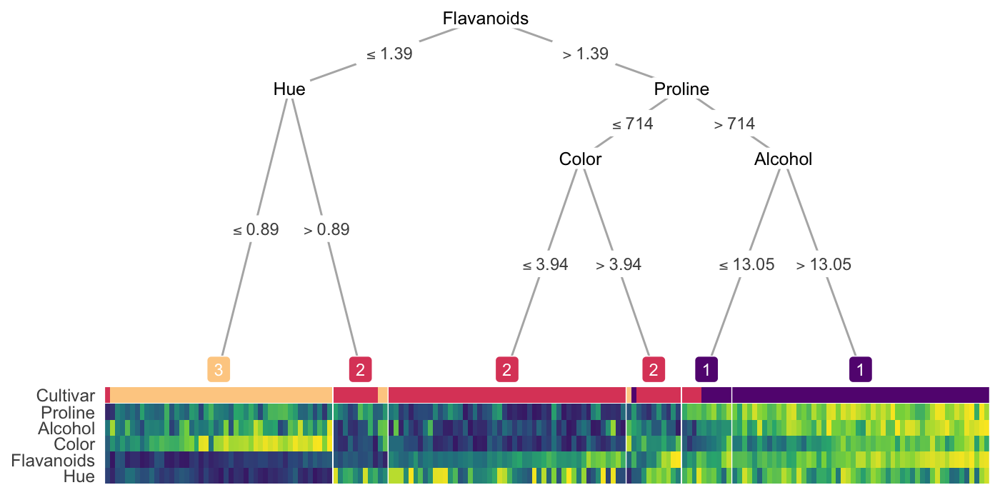
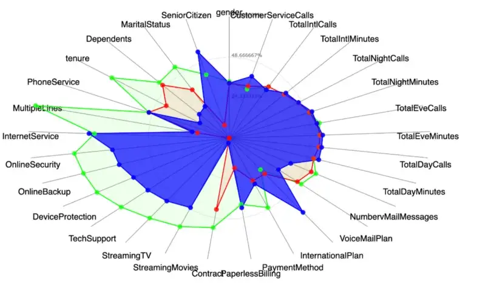
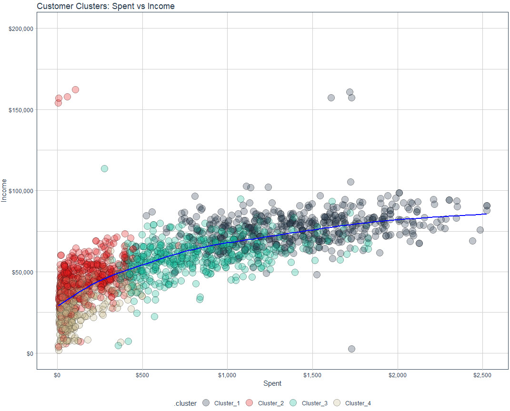

General
Misc
- Also see
- Notebook, pgs 57-58
- Diagnostics, Clustering
- For static data, i.e., if the values do not change with time, clustering methods are usually divided into five major categories:
- Partitioning (or Partitional)
- Hierarchical
- Density-Based
- Grid-Based
- Model-Based Methods
Terms
- Cluster Centroid - The middle of a cluster. A centroid is a vector that contains one number for each variable, where each number is the mean of a variable for the observations in that cluster. The centroid can be thought of as the multi-dimensional average of the cluster.
- Hard (or Crisp) Clustering - each point belongs to a single cluster
- Soft (or Fuzzy) Clustering - each point is allowed to belong to multiple clusters
Cluster Descriptions
- Packages
- {parameters} - provides various functions for describing, analyzing, and visualizing clusters for various methods
- {clustereval} - compute the statistical association between the features and the detected cluster labels and whether they are significant.
- Categorical: Chi-Square, Fisher’s Exact, or Hypergeometric tests
- Continuous: Mann-Whitney-U test
- Examine variable values at the centroids of each cluster
- A higher absolute value indicates that a certain variable characteristic is more pronounced within that specific cluster (as compared to other cluster groups with lower absolute mean values).
- Distributional statistics for each cluster
- Numeric variables: mean and sd for each variable in that cluster
- Categorical variables:
- binary: percent where event = 1
- multinomial: most prominent category
- Run a decision tree on clusters
.png)
- Each color (orange, blue, green, purple) represents a cluster
- Explains how clusters were generated
- {treeheatr}

- Radar charts
- 3 clusters: blue (highlighted), red, green
- Guessing the mean values for each variable are the points
- Scatter
- Use clustering variables of interest for a scatter plot then label the points with cluster id

- Use clustering variables of interest for a scatter plot then label the points with cluster id
{kind=link}
{kind=link}
{kind=link}
Gaussian Mixture Models (GMM)
- Misc
- Soft clustering algorithm
- Notes from
- Serrano video: https://www.youtube.com/watch?v=q71Niz856KE&ab_channel=LuisSerrano
- Packages
- {otrimle}
- Uses Improper Maximum Likelihood Estimator Clustering (IMLEC) method
- Hyperparameters automatically tuned; Outliers removed
- Robust gaussian mixture clustering algorithm
- Webpage has links to paper, Coretto and Hennig, 2016
- {otrimle}
- Components of the Algorithm
- “Color” points according to gaussians (clusters)
- The closer a point is to the center of a gaussian the more intensely it matches the color of that gaussian
- Points in between gaussians are a mixture or proportion of the colors of each gaussian
.png)
- Fitting a Gaussian
- Find the center of mass
- 2-dim: calculate the mean of x and the mean of y and that’s the coordinates of your center of mass
- Find the spread of the points
2-dim: calculate the x-variance, y-variance, and covariance
.png)
- First Equation: Height of Gaussian (Multivariate Gaussian distribution equation).
- Second Equation: 1-D gaussian equation that’s just being used for reference
Partially “colored” points affect spread and center of mass calculations
- Fully colored points “weigh” more than partially colored points and pull the center of mass and change the orientation
.png)
- Fully colored points “weigh” more than partially colored points and pull the center of mass and change the orientation
- Find the center of mass
- “Color” points according to gaussians (clusters)
- Steps
- Start with random Gaussians
- Each gaussian has random means, variances
- Color points according to distance to the random gaussians
- The heights in the distributions pic above
- (Forget about old gaussians) Calculate new gaussians based on the colored points
- (Forget about old colors) Color points according to distance to the new gaussians
- Repeat until some threshold is reached (i.e. gaussians or colors don’t change much)
- Start with random Gaussians
- Tuning
- Initial Conditions (i.e. Good starting points for the random gaussians at the beginning)
- Limits on the mean and variance calculations
- Number of gaussians, k, can be chosen by minimizing the Davies-Bouldin score
- See Diagnostics, Clustering >> Spherical/Centroid Based >> Davies-Bouldin Index
- Running algorithm multiple times
- Like CV grid search algs or bootstrapping
Latent Profile Analysis (LPA)
Sort of like k-means + GMM
k number of profiles (i.e. clusters) are chosen
Model outputs probabilities that an observation belongs to any particular cluster
GOF metrics available
“As with Exploratory Factor Analysis (EFA )(and other latent-variable models), the assumption of LPA is that the latent (unobserved) factor”causes” (I’m using the term loosely here) observed scores on the indicator variables. So, to refer back to my initial hypothetical example, a monster being a spell caster (the unobserved class) causes it to have high intelligence, low strength, etc. rather than the inverse. This is a worthwhile distinction to keep in mind, since it has implications for how the model is fit.”
Bin variables that might dominate the profile. This way the profiles will represent a latent variable and not gradations of the dominate variable (e.g. low, middle, high values of the dominate variable).
Center other variable observations according to dominant variable bin those observations are in. (e.g. subtract values in bin1 from bin1’s mean)
# From D&D article where challenge_rating is a likely dominant variable mons_bin <- mons_df %>% mutate(cr_bin = ntile(x = challenge_rating, n = 6)) ab_scores <- c("strength", "dexterity", "constitution", "intelligence", "wisdom", "charisma") mons_bin <- mons_bin %>% group_by(cr_bin) %>% mutate(across(.cols = ab_scores, .fns = mean, .names = "{.col}_bin_mean")) %>% ungroup()
tSNE
- Packages
- {Rtsne}
- t-Distributed Stochastic Neighbor Embedding
- Looks at the local distances between points in the original data space and tries to reproduce them in the low-dimensional representation
- Both UMAP and tSNE attempt to do this but fails (Lior Pachter paper thread, Doesn’t preserve local structure, No theorem says that it preserves topology)
- Results depend on a random starting point
- Tuning parameters: perplexity
UMAP
- Packages:
- {umap}
- {scDEED} (article) - Detects Dubious t-SNE and UMAP Embeddings and Optimizes Hyperparameters
- scDEED assigns a reliability score to each 2D embedding to indicate how much the data point’s mid-range neighbors change in the 2D space. Observations whose 2D embedding neighbors have been drastically changed through the embedding process are called ‘dubious.’
- Uniform Manifold Approximation and Projection
- See tSNE section for Lior Pachter threads on why not to use tSNE or UMAP
- Preprocessing
- Only for numeric variables
- Standardize
- Projects variables to a nonlinear space
- Variation of tSNE
- Random starting point has less of an impact
- Can be supervised (give it an outcome variable)
- Computationally intensive
- Low-dimensional embedding cannot be interpreted
- No rotation matrix plot like in PCA
- Try pca - linear method (fast)
- If successful (good separation between categories), then prediction may be easier
- If not, umap, tsne needed
- UMAP can taking training model and apply it to test data or new data (tSNE can’t)
- Tuning parameter: neighbors
- Example used 500 iterations (n_epochs) as limit for convergence
K-Means
- Seeks to assign n points to k clusters and find cluster centers so as to minimize the sum of squared distances from each point to its cluster center.
- For choosing the number of clusters, elbow method (i.e. WSS) is usually awful if there are more than few clusters. Recommended: Calinski-Harabasz Index and BIC then Silhouette Coefficient or Davies-Bouldin Index (See Diagnostics, Clustering >> Spherical/Centroid Based (article)
- Base R
kmeansuses the Hartigan-Wong algorithm- For large k and larger n, the density of cluster centers should be proportional to the density of the points to the power (d/d+2). In other words the distribution of clusters found by k-means should be more spread out than the distribution of points. This is not in general achieved by commonly used iterative schemes, which stay stuck close to the initial choice of centers.
- {tidyclust}
Engines
- stats and ClusterR run classical K-means
- laR runs K-Modes models which are the categorical analog to K-means, meaning that it is intended to be used on only categorical data
- clustMixType to run K-prototypes which are the more general method that works with categorical and numeric data at the same time.
Example: Mixed K-Means
library(tidymodels) library(tidyclust) data("ames", package = "modeldata") kproto_spec <- k_means(num_clusters = 3) %>% set_engine("clustMixType") kproto_fit <- kproto_spec %>% fit(~ ., data = ames) kproto_fit %>% extract_centroids() %>% select(11:20) %>% glimpse() #> Rows: 3 #> Columns: 10 #> $ Lot_Config <fct> Inside, Inside, Inside #> $ Land_Slope <fct> Gtl, Gtl, Gtl #> $ Neighborhood <fct> College_Creek, North_Ames, Northridge_Heights #> $ Condition_1 <fct> Norm, Norm, Norm #> $ Condition_2 <fct> Norm, Norm, Norm #> $ Bldg_Type <fct> OneFam, OneFam, OneFam #> $ House_Style <fct> Two_Story, One_Story, One_Story #> $ Overall_Cond <fct> Average, Average, Average #> $ Year_Built <dbl> 1989.977, 1953.793, 1998.765 #> $ Year_Remod_Add <dbl> 1995.934, 1972.973, 2003.035
Approximate Nearest Neighbor (ANN)
- kNN runs at O(N*K), where N is the number of items and K is the size of each embedding. Approximate nearest neighbor (ANN) algorithms typically drop the complexity of a lookup to O(log(n)).
- Misc
- Also see Maximum inner product search using nearest neighbor search algorithms
- It shows a preprocessing transformation that is performed before kNN to make it more efficient
- It might already be implemented in ANN algorithms
- Also see Maximum inner product search using nearest neighbor search algorithms
- Commonly used in Recommendation algs to cluster user-item embeddings at the end. Also, any NLP task where you need to do a similarity search of one character embedding to other character embeddings.
- Generally uses one of two main categories of hashing methods: either data-independent methods, such as locality-sensitive hashing (LSH); or data-dependent methods, such as Locality-preserving hashing (LPH)
- Locality-Sensitive Hashing (LSH)
- Hashes similar input items into the same “buckets” with high probability.
- The number of buckets is much smaller than the universe of possible input items
- Hash collisions are maximized, not minimized, where a collision is where two distinct data points have the same hash.
- Spotify’s Annoy
- Uses a type of LSH, Random Projections Method (RPM) (article didn’t explain this well)
- L RPM hashing functions are chosen. Each data point, p, gets hashed into buckets in each of the L hashing tables. When a new data point, q, is “queried,” it gets hash into buckets like p did. All the hashes in the same buckets of p are pulled and the hashes within a certain threshold, c*R, are considered nearest neighbors.
- Wiki article on LSH and RPM clears it up a little, but I’d probably have to go to Spotify’s paper to totally make sense of this.
- Also the Spotify alg might bring trees/forests into this somehow
- Facebook AI Similarity Search (FAISS)
- Hierarchical Navigable Small World Graphs (HNSW)
- HNSW has a polylogarithmic time complexity (O(logN))
- Two approximations available Embeddings are clustered and centroids are calculated. The k nearest centroids are returned.
- Embeddings are clustered into veroni cells. The k nearest embeddings in a veroni cell or a region of veroni cells is returned.
- Both types of approximations have tuning parameters.
- Inverted File Index + Product Quantization (IVFPQ)(article)
DBSCAN
{kind=link}
- Misc
- Notes from:
- Understanding DBSCAN and Implementation with Python
- Clustering with DBSCAN, Clearly Explained video
- Packages
- {dbscan}
- {parameters}
n_clusters_dbscan- Given a “min_size” (aka minPts?), the function estimates the optimal “eps”cluster_analysis- Shows Sum of Squares metrics and the (standardized) mean value for each variable within each cluster.
- HDBSCAN is the hierarchical density-based clustering algorithm
- Use Cases
- Geospatially Clustering Earthquakes
- Events can occur in irregular shaped clusters (i.e., along faults of different orientations).
- Events can occur in different densities (i.e. some fault zones are more active than others).
- Events can occur far away from fault zones (i.e. outliers)
- Geospatially Clustering Earthquakes
- Notes from:
- Tuning
- eps - The maximum distance between two samples for one to be considered to be connected to the other
- Large eps tend to include more points within a cluster,
- Too-large eps will include everything in the same single cluster
- Too-small eps will result in no clustering at all
- minPts (or min_samples) - The minimum number of samples in a neighborhood for a point to be considered as a core point
- Too-small minPts is not meaningful because it will regard every point as a core point.
- Larger minPts can be better to deal with noisy data
- eps - The maximum distance between two samples for one to be considered to be connected to the other
- Algorithm
- For each data point, find the points in the neighborhood within eps distance, and define the core points as those with at least minPts neighbors.
.1.png)
- The orange circle represents the eps area
- If minPts = 4, then the top 4 points are core points because they have at least 4 points overlapping the eps area
- Define groups of connected core points as clusters.
.2.png)
- All the green points have been labelled as core points
- Assign each non-core point to a nearby cluster if it’s directly reachable from a neighboring core point, otherwise define it as an outlier.
.png)
- The black points are non-core points but are points that overlap the eps area for the outer-most core points.
- Adding these black points finalizes the first cluster
- This process is repeated for the next group of core points and continues until all that’s left are outliers.
- For each data point, find the points in the neighborhood within eps distance, and define the core points as those with at least minPts neighbors.
- Advantages
- Doesn’t require users to specify the number of clusters.
- Not sensitive to outliers.
- Clusters formed by DBSCAN can be any shape, which makes it robust to different types of data.
- Example: Nested Cluster Structure
- K-Means
.png)
- K-Means wants spherical clusters which makes it grab groups of points it shouldn’t
- DBSCAN
.png)
- Able correctly identify the oblong shaped cluster
- K-Means
- Example: Nested Cluster Structure
- Disadvantages
- If the data has a very large variation in densities across clusters because you can only use one pair of parameters, eps and MinPts, on one dataset
- It could be hard to define eps without the domain knowledge of the data
- Clusters not totally reproducible. Clusters are defined sequentially so depending on which group of core points the algorithm starts with and hyperparameter values, some non-core points that are within the eps area of multiple clusters may be assigned to different clusters on different runs of the algorithm.